Coeliac mutagenesis analysis
In this notebook we try to recreate the results of the paper that the α1 peptide is a stronger binder than the ω1 peptide and that disrupting the ‘WD’ motif in the CDR3β will reduce binding to both epitopes.
[1]:
import re
import anarci
import matplotlib.pyplot as plt
import numpy as np
import pandas as pd
import pingouin as pg
import seaborn as sns
from matplotlib.ticker import PercentFormatter
from sklearn.metrics import roc_auc_score
from sklearn.metrics.pairwise import cosine_similarity
[2]:
SIGNIFICANCE_LEVEL = 0.05
[3]:
sequences = pd.read_csv('../data/interim/sequences_coeliac_mutations.csv', index_col='id')
[4]:
sequences['wd_motif'] = sequences['cdr3_beta'].map(
lambda cdr3_beta: 'Contains WD motif' if 'WD' in cdr3_beta else 'Does not contain WD motif'
)
[5]:
sequences['original'] = sequences.index.map(lambda id_: 'original' in id_)
cdr3_alpha = sequences[sequences['original']]['cdr3_alpha'].unique()[0]
sequences_beta_only_mutations = sequences[sequences['cdr3_alpha'] == cdr3_alpha].copy()
[6]:
def find_mutation_location(new_chain: str, original: str) -> tuple[int, str]:
numbering, _ = anarci.number(new_chain)
original_idx = 0
for (seq_id, insert_code), residue in numbering:
if residue == '-':
continue
if residue != original[original_idx]:
return seq_id, insert_code
original_idx += 1
msg = f'No mutation found in {new_chain}'
raise ValueError(msg)
sequences_beta_only_mutations[['mutation_seq_id', 'mutation_insert_code_id']] = None
sequences_beta_only_mutations.loc[
(sequences_beta_only_mutations['pmhc_calls'] == 'a1') & ~sequences_beta_only_mutations['original'],
['mutation_seq_id', 'mutation_insert_code_id'],
] = (
sequences_beta_only_mutations.loc[
(sequences_beta_only_mutations['pmhc_calls'] == 'a1') & ~sequences_beta_only_mutations['original'],
'tcr_beta_chain',
]
.map(
lambda tcr_beta_chain: find_mutation_location(
tcr_beta_chain, sequences_beta_only_mutations.loc['coeliac_a1_mut_original', 'tcr_beta_chain']
)
)
.apply(pd.Series)
.to_numpy()
)
sequences_beta_only_mutations.loc[
(sequences_beta_only_mutations['pmhc_calls'] == 'w1') & ~sequences_beta_only_mutations['original'],
['mutation_seq_id', 'mutation_insert_code_id'],
] = (
sequences_beta_only_mutations.loc[
(sequences_beta_only_mutations['pmhc_calls'] == 'w1') & ~sequences_beta_only_mutations['original'],
'tcr_beta_chain',
]
.map(
lambda tcr_beta_chain: find_mutation_location(
tcr_beta_chain, sequences_beta_only_mutations.loc['coeliac_w1_mut_original', 'tcr_beta_chain']
)
)
.apply(pd.Series)
.to_numpy()
)
[7]:
true_structural_features = pd.read_csv('../data/processed/coeliac_structure_structural_features.csv')
true_sc_and_bsa = pd.read_csv('../data/processed/coeliac_structure_sc_and_bsa.csv')
true_structural_features = true_structural_features.merge(true_sc_and_bsa)
true_structural_features['antigen'] = true_structural_features['name'].map(
lambda name: re.match(r'DQ2_5([a-z]\d)_572G2_DECAB', name).group(1)
)
[8]:
def process_contacts(contacts: pd.DataFrame, group_name: str | list[str]) -> pd.DataFrame:
contact_antigens = contacts[contacts['chain_type_pmhc'] == 'antigen_chain'].copy()
contact_antigens['relative_pos_centre_pmhc'] = contact_antigens['relative_pos_centre_pmhc'].astype(int)
contact_antigens_scores = (
contact_antigens.groupby(group_name)
.value_counts(['cdr_type', 'relative_pos_centre_tcr', 'relative_pos_centre_pmhc'])
.reset_index()
.pivot_table(
index=group_name,
columns=['cdr_type', 'relative_pos_centre_tcr', 'relative_pos_centre_pmhc'],
values='count',
)
.fillna(0)
.map(int)
)
contact_antigens_scores.columns = [
'_'.join(str(idx) for idx in indices) for indices in contact_antigens_scores.columns.to_flat_index()
]
contacts_mhc = contacts[contacts['chain_type_pmhc'].isin({'mhc_chain1', 'mhc_chain2'})].copy()
contacts_mhc_scores = (
contacts_mhc.groupby(group_name)
.value_counts(['cdr_type', 'relative_pos_centre_tcr', 'chain_type_pmhc', 'resi_pmhc'])
.reset_index()
.pivot_table(
index=group_name,
columns=['cdr_type', 'relative_pos_centre_tcr', 'chain_type_pmhc', 'resi_pmhc'],
values='count',
)
.fillna(0)
.map(int)
)
contacts_mhc_scores.columns = [
'_'.join(str(idx) for idx in indices) for indices in contacts_mhc_scores.columns.to_flat_index()
]
contacts_scores = pd.concat([contact_antigens_scores, contacts_mhc_scores], axis=1).fillna(0).map(int)
contacts_scores = contacts_scores.reset_index()
return contacts_scores
[9]:
true_contact_maps = pd.read_csv('../data/processed/coeliac_structure_contacts.csv')
true_contact_maps['relative_pos_centre_tcr'] = true_contact_maps['relative_pos_centre_tcr'].astype(int)
true_contact_maps['resi_pmhc'] = true_contact_maps['resi_pmhc'].astype(str).str.replace('.0', '')
true_contact_maps_scores = process_contacts(true_contact_maps, 'name')
true_contact_maps_scores['antigen'] = true_contact_maps_scores['name'].map(
lambda name: re.match(r'DQ2_5([a-z]\d)_572G2_DECAB', name).group(1)
)
[10]:
true_interactions = pd.read_csv('../data/processed/coeliac_structure_interactions.csv')
[11]:
true_a1_interactions_summary = (
true_interactions.query("name == 'DQ2_5a1_572G2_DECAB'")[
['type', 'domain', 'original_numbering', 'protein_residue', 'ligand_number', 'ligand_residue', 'distance']
]
.sort_values('original_numbering')
.reset_index(drop=True)
)
true_a1_interactions_summary['ligand_number'] = true_a1_interactions_summary['ligand_number'] + 1
true_w1_interactions_summary = (
true_interactions.query("name == 'DQ2_5w1_572G2_DECAB'")[
['type', 'domain', 'original_numbering', 'protein_residue', 'ligand_number', 'ligand_residue', 'distance']
]
.sort_values(['original_numbering', 'ligand_number'])
.reset_index(drop=True)
)
true_w1_interactions_summary['ligand_number'] = true_w1_interactions_summary['ligand_number'] + 1
[12]:
sequences_beta_only_mutations['disrupts_interaction'] = None
sequences_beta_only_mutations.loc[sequences_beta_only_mutations['pmhc_calls'] == 'a1', 'disrupts_interaction'] = (
sequences_beta_only_mutations.loc[sequences_beta_only_mutations['pmhc_calls'] == 'a1', 'mutation_seq_id'].map(
lambda mutation_seq_id: mutation_seq_id in true_a1_interactions_summary['original_numbering'].tolist()
)
)
sequences_beta_only_mutations.loc[sequences_beta_only_mutations['pmhc_calls'] == 'w1', 'disrupts_interaction'] = (
sequences_beta_only_mutations.loc[sequences_beta_only_mutations['pmhc_calls'] == 'w1', 'mutation_seq_id'].map(
lambda mutation_seq_id: mutation_seq_id in true_w1_interactions_summary['original_numbering'].tolist()
)
)
sequences_beta_only_mutations['disrupts_interaction'] = sequences_beta_only_mutations['disrupts_interaction'].astype(
bool
)
[13]:
confidence_scores = pd.read_csv('../data/interim/confidence_scores_af3_af3_tcrmodel2_coeliac_mutations.csv')
[14]:
confidence_scores = confidence_scores.merge(
sequences_beta_only_mutations, how='inner', left_on='name', right_index=True
)
[15]:
binding_scores = pd.read_csv('../data/processed/af3_af3_tcrmodel2_coeliac_mutations_pae_aggregator_predictions.csv')
binding_scores['prediction'] = binding_scores[
['prediction_1', 'prediction_2', 'prediction_3', 'prediction_4', 'prediction_5']
].apply('median', axis=1)
[16]:
binding_scores = binding_scores.merge(sequences_beta_only_mutations, how='inner', left_on='name', right_index=True)
Structure prediction quality
[17]:
CAPRI_ACCEPTABLE_CUTOFF = 0.23
CAPRI_MEDIUM_CUTOFF = 0.49
CAPRI_HIGH_CUTOFF = 0.80
[18]:
dockq_scores = pd.read_csv('../data/processed/predicted_af3_af3_tcrmodel2_dockq_coeliac.csv')
dockq_scores[['name', 'reference_structure']] = dockq_scores['name'].str.split('-').apply(pd.Series)
[19]:
dockq_scores = dockq_scores.merge(confidence_scores, how='inner', on=['name', 'seed', 'sample']).merge(
binding_scores[['name', 'seed', 'sample', 'prediction']], how='inner', on=['name', 'seed', 'sample']
)
[20]:
dockq_scores['top_rank'] = False
dockq_scores.loc[dockq_scores.groupby('name')['ranking_score'].idxmax(), 'top_rank'] = True
[21]:
fig, ax = plt.subplots(1, 1)
for label, cutoff, colour in (
('↑Acceptable', CAPRI_ACCEPTABLE_CUTOFF, '#ff7f7f'),
('↑Medium', CAPRI_MEDIUM_CUTOFF, '#ff1a1a'),
('↑High', CAPRI_HIGH_CUTOFF, '#7f0d0d'),
):
ax.text(-0.5, cutoff + 0.01, label, color=colour)
ax.axhline(cutoff, linestyle='dashed', color=colour)
sns.boxplot(
dockq_scores,
x='pmhc_calls',
y='DockQ',
color='tab:blue',
showfliers=False,
boxprops={'alpha': 0.75},
zorder=2,
ax=ax,
)
sns.swarmplot(dockq_scores.query('not top_rank'), y='DockQ', x='pmhc_calls', color='grey', zorder=1, ax=ax)
sns.swarmplot(dockq_scores.query('top_rank'), y='DockQ', x='pmhc_calls', color='green', zorder=1, ax=ax)
for _, pmhc_calls, dockq in dockq_scores.query('top_rank')[['pmhc_calls', 'DockQ']].itertuples():
ax.annotate(
'Top Ranked Prediction',
xy=(pmhc_calls, dockq),
xycoords='data',
xytext=(0.50, 0.90),
textcoords='axes fraction',
va='top',
ha='center',
arrowprops={'arrowstyle': '->', 'color': 'gray', 'lw': 1.5},
fontsize=11,
)
ax.set_ylim([0.0, 1.0])
ax.set_ylabel(ax.get_ylabel(), fontsize=12)
ax.set_xlabel('Epitope', fontsize=12)
plt.show()
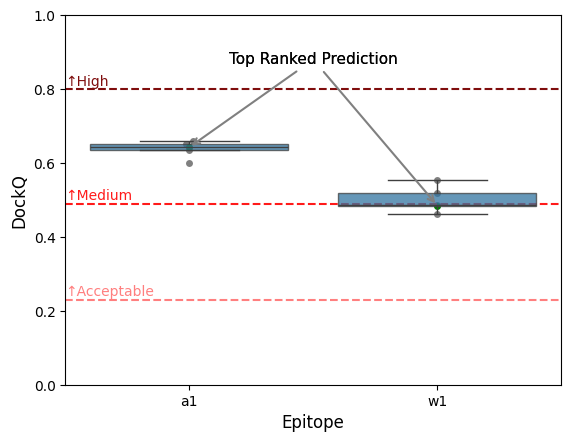
[22]:
sns.displot(dockq_scores, col='pmhc_calls', x='DockQ', kind='hist')
plt.show()
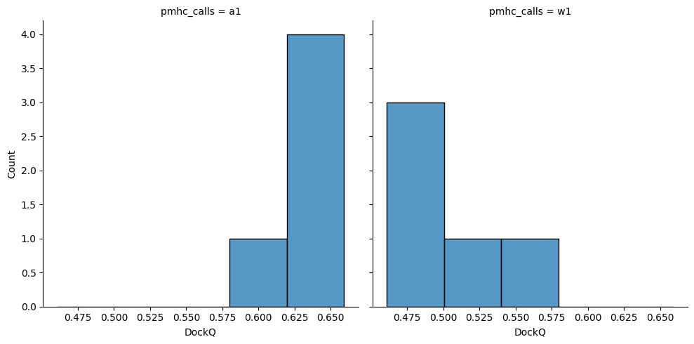
[23]:
pg.mwu(
dockq_scores[dockq_scores['pmhc_calls'] == 'a1']['DockQ'],
dockq_scores[dockq_scores['pmhc_calls'] == 'w1']['DockQ'],
alternative='two-sided',
)
[23]:
| U-val | alternative | p-val | RBC | CLES | |
|---|---|---|---|---|---|
| MWU | 25.0 | two-sided | 0.007937 | 1.0 | 1.0 |
[24]:
ax = sns.regplot(dockq_scores, x='DockQ', y='prediction')
ax.set_xlabel('DockQ')
ax.set_ylabel('Binding Score')
plt.show()
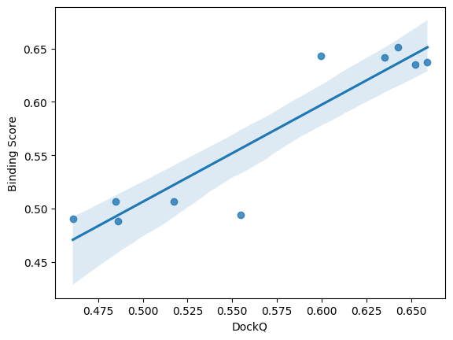
[25]:
result = pg.corr(dockq_scores['DockQ'], dockq_scores['prediction'], alternative='less')
print(f"R^2 = {result.iloc[0]['r'] ** 2:.2f}")
result
R^2 = 0.86
[25]:
| n | r | CI95% | p-val | BF10 | power | |
|---|---|---|---|---|---|---|
| pearson | 10 | 0.925753 | [-1.0, 0.98] | 0.999939 | 0.121 | 6.138857e-10 |
Epitope baseline binding score
[26]:
binding_scores.value_counts(['pmhc_calls', 'wd_motif']).sort_index()
[26]:
pmhc_calls wd_motif
a1 Contains WD motif 35
Does not contain WD motif 10
w1 Contains WD motif 35
Does not contain WD motif 10
Name: count, dtype: int64
[27]:
ax = sns.boxplot(binding_scores.query('original'), x='pmhc_calls', y='prediction')
ax.set_xlabel('Epitope')
ax.set_ylabel('Binding Score')
ax.set_ylim([0.45, 0.70])
plt.show()
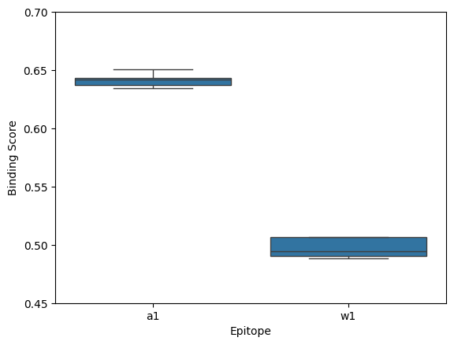
[28]:
grid = sns.FacetGrid(binding_scores.query('original'), col='pmhc_calls', sharex=False)
grid.map_dataframe(sns.histplot, x='prediction')
plt.show()
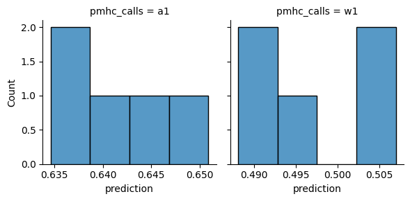
[29]:
result = pg.mwu(
binding_scores.query("original and pmhc_calls == 'a1'")['prediction'],
binding_scores.query("original and pmhc_calls == 'w1'")['prediction'],
alternative='greater',
)
result['significant'] = result['p-val'] < SIGNIFICANCE_LEVEL
result
[29]:
| U-val | alternative | p-val | RBC | CLES | significant | |
|---|---|---|---|---|---|---|
| MWU | 25.0 | greater | 0.003968 | 1.0 | 1.0 | True |
Mutagenesis analysis
[30]:
binding_scores_mutations = binding_scores.query('not original')
WD-motif
[31]:
fig, axes = plt.subplots(1, 2, figsize=(10, 5))
sns.boxplot(binding_scores_mutations, x='wd_motif', y='prediction', ax=axes[0])
axes[0].set_ylabel('Binding Score')
axes[0].set_xlabel('')
axes[0].set_ylim(0.4, 0.8)
sns.boxplot(binding_scores_mutations, x='pmhc_calls', y='prediction', hue='wd_motif', ax=axes[1])
axes[1].set_ylabel('Binding Score')
axes[1].set_xlabel('Epitope')
axes[1].set_ylim(0.4, 0.8)
axes[1].legend(title='', loc='lower left')
plt.show()
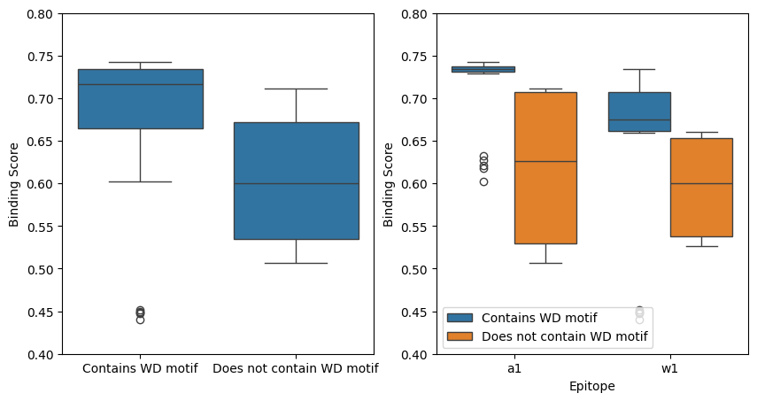
[32]:
def is_outlier(x: pd.Series) -> pd.Series:
q1 = x.quantile(0.25)
q3 = x.quantile(0.75)
iqr = q3 - q1
lower = q1 - 1.5 * iqr
upper = q3 + 1.5 * iqr
return (x < lower) | (x > upper)
outliers = binding_scores_mutations.query("wd_motif == 'Contains WD motif'")[
binding_scores_mutations.query("wd_motif == 'Contains WD motif'")
.groupby('pmhc_calls')['prediction']
.transform(is_outlier)
]
outliers['cdr3_beta'].unique()
[32]:
array(['ASALVAWDTEAF'], dtype=object)
[33]:
print('Original CDR3b:', sequences.loc['coeliac_a1_mut_original']['cdr3_beta'])
Original CDR3b: ASSLVAWDTEAF
[34]:
score = 1 - roc_auc_score(binding_scores_mutations['wd_motif'], binding_scores_mutations['prediction'])
print(f'ROC-AUC detecting dirupting mutations: {score:.2f}')
ROC-AUC detecting dirupting mutations: 0.80
[35]:
score_per_epitope = binding_scores_mutations.groupby('pmhc_calls').apply(
lambda group: 1 - roc_auc_score(group['wd_motif'], group['prediction']), include_groups=False
)
print('ROC-AUC detecting dirupting mutations per epitope: \n\n', score_per_epitope)
print()
print(f'Mean: {score_per_epitope.mean():.2f}')
ROC-AUC detecting dirupting mutations per epitope:
pmhc_calls
a1 0.916667
w1 0.826667
dtype: float64
Mean: 0.87
[36]:
grid = sns.FacetGrid(binding_scores_mutations, col='wd_motif', sharex=False)
grid.map_dataframe(sns.histplot, x='prediction')
plt.show()
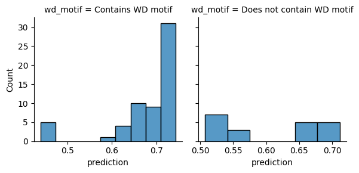
[37]:
result = pg.mwu(
binding_scores_mutations.query("wd_motif == 'Contains WD motif'")['prediction'],
binding_scores_mutations.query("wd_motif == 'Does not contain WD motif'")['prediction'],
alternative='greater',
)
result['significant'] = result['p-val'] < SIGNIFICANCE_LEVEL
result
[37]:
| U-val | alternative | p-val | RBC | CLES | significant | |
|---|---|---|---|---|---|---|
| MWU | 963.0 | greater | 0.000028 | 0.605 | 0.8025 | True |
[38]:
grid = sns.FacetGrid(binding_scores_mutations, row='pmhc_calls', col='wd_motif', sharex=False)
grid.map_dataframe(sns.histplot, x='prediction')
plt.show()
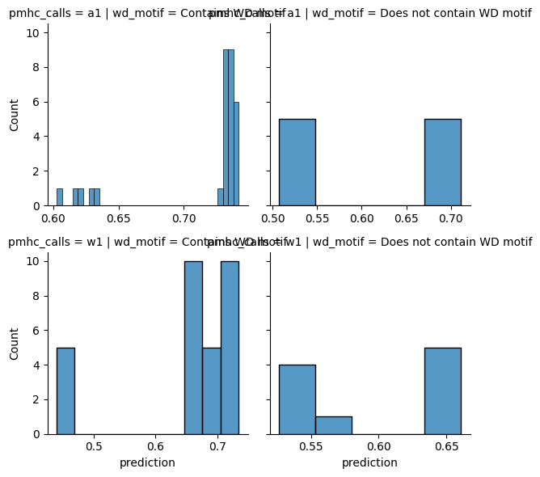
[39]:
result = pg.anova(binding_scores_mutations, dv='prediction', between=['pmhc_calls', 'wd_motif'])
result['significant'] = result['p-unc'] < SIGNIFICANCE_LEVEL
result
[39]:
| Source | SS | DF | MS | F | p-unc | np2 | significant | |
|---|---|---|---|---|---|---|---|---|
| 0 | pmhc_calls | 0.061091 | 1.0 | 0.061091 | 10.684938 | 0.001624 | 0.123262 | True |
| 1 | wd_motif | 0.087127 | 1.0 | 0.087127 | 15.238721 | 0.000203 | 0.167020 | True |
| 2 | pmhc_calls * wd_motif | 0.007844 | 1.0 | 0.007844 | 1.371928 | 0.245140 | 0.017732 | False |
| 3 | Residual | 0.434530 | 76.0 | 0.005718 | NaN | NaN | NaN | False |
[40]:
results = []
for pmhc_calls, epitope_group in binding_scores_mutations.groupby('pmhc_calls'):
result = pg.ttest(
epitope_group.query("wd_motif == 'Contains WD motif'")['prediction'],
epitope_group.query("wd_motif == 'Does not contain WD motif'")['prediction'],
alternative='greater',
)
result['epitope_name'] = pmhc_calls
results.append(result)
results = pd.concat(results)
results = results.set_index('epitope_name')
results['significant'] = results['p-val'] < (SIGNIFICANCE_LEVEL / len(results))
results
[40]:
| T | dof | alternative | p-val | CI95% | cohen-d | BF10 | power | significant | |
|---|---|---|---|---|---|---|---|---|---|
| epitope_name | |||||||||
| a1 | 3.142467 | 10.280285 | greater | 0.005065 | [0.04, inf] | 1.632927 | 23.486 | 0.996980 | True |
| w1 | 2.065935 | 24.696703 | greater | 0.024738 | [0.01, inf] | 0.605838 | 3.334 | 0.493885 | True |
All interactions
[41]:
fig, axes = plt.subplots(1, 2, figsize=(10, 5))
sns.boxplot(binding_scores_mutations, x='disrupts_interaction', y='prediction', ax=axes[0])
axes[0].set_ylabel('Binding Score')
axes[0].set_ylim(0.4, 0.8)
axes[0].set_xlabel('')
axes[0].set_xticks(axes[0].get_xticks())
axes[0].set_xticklabels(
[
{'True': 'Disrupts interaction', 'False': 'Does not disrupt interaction'}[label.get_text()]
for label in axes[0].get_xticklabels()
],
rotation=-45,
ha='left',
)
sns.boxplot(binding_scores_mutations, x='pmhc_calls', y='prediction', hue='disrupts_interaction', ax=axes[1])
axes[1].set_ylabel('Binding Score')
axes[1].set_ylim(0.4, 0.8)
axes[1].set_xlabel('Epitope')
handles, labels = axes[1].get_legend_handles_labels()
axes[1].legend(
handles,
[{'True': 'Disrupts interaction', 'False': 'Does not disrupt interaction'}[label] for label in labels],
title='',
loc='lower left',
)
plt.show()
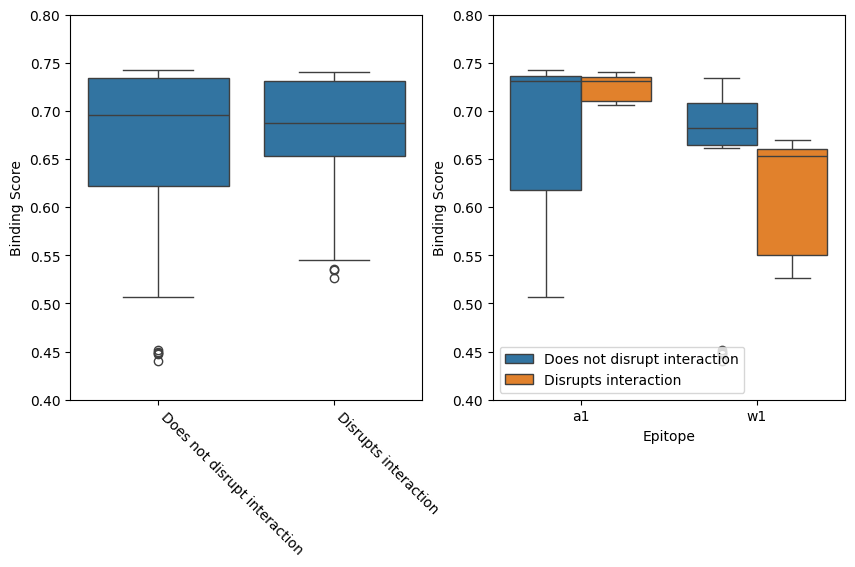
[42]:
grid = sns.FacetGrid(binding_scores_mutations, col='disrupts_interaction', sharex=False)
grid.map_dataframe(sns.histplot, x='prediction')
plt.show()
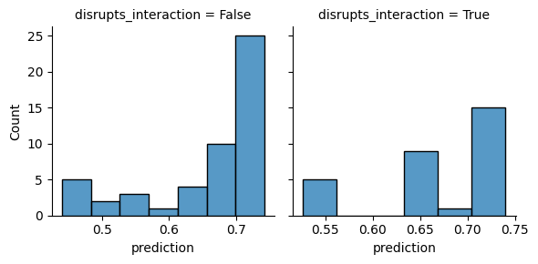
[43]:
result = pg.mwu(
binding_scores_mutations.loc[~binding_scores_mutations['disrupts_interaction'], 'prediction'],
binding_scores_mutations.loc[binding_scores_mutations['disrupts_interaction'], 'prediction'],
alternative='greater',
)
result['significant'] = result['p-val'] < SIGNIFICANCE_LEVEL
result
[43]:
| U-val | alternative | p-val | RBC | CLES | significant | |
|---|---|---|---|---|---|---|
| MWU | 756.0 | greater | 0.478205 | 0.008 | 0.504 | False |
[44]:
grid = sns.FacetGrid(binding_scores_mutations, row='pmhc_calls', col='disrupts_interaction', sharex=False)
grid.map_dataframe(sns.histplot, x='prediction')
plt.show()
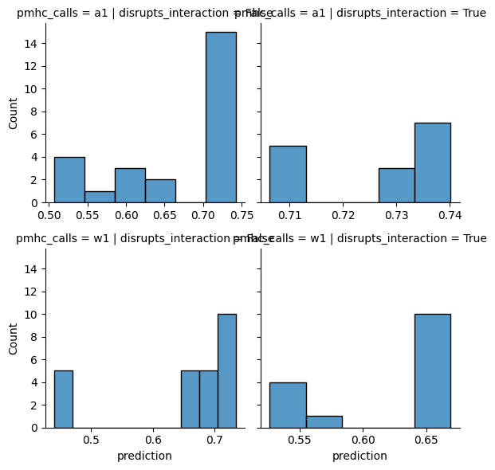
[45]:
result = pg.anova(binding_scores_mutations, dv='prediction', between=['pmhc_calls', 'disrupts_interaction'])
result['significant'] = result['p-unc'] < SIGNIFICANCE_LEVEL
result
[45]:
| Source | SS | DF | MS | F | p-unc | np2 | significant | |
|---|---|---|---|---|---|---|---|---|
| 0 | pmhc_calls | 0.061091 | 1.0 | 0.061091 | 9.414218 | 0.002983 | 0.110218 | True |
| 1 | disrupts_interaction | 0.003440 | 1.0 | 0.003440 | 0.530114 | 0.468796 | 0.006927 | False |
| 2 | pmhc_calls * disrupts_interaction | 0.032879 | 1.0 | 0.032879 | 5.066691 | 0.027281 | 0.062500 | True |
| 3 | Residual | 0.493183 | 76.0 | 0.006489 | NaN | NaN | NaN | False |
[46]:
results = []
for pmhc_calls, epitope_group in binding_scores_mutations.groupby('pmhc_calls'):
result = pg.ttest(
epitope_group.query('not disrupts_interaction')['prediction'],
epitope_group.query('disrupts_interaction')['prediction'],
alternative='greater',
)
result['epitope_name'] = pmhc_calls
results.append(result)
results = pd.concat(results)
results = results.set_index('epitope_name')
results['significant'] = results['p-val'] < (SIGNIFICANCE_LEVEL / len(results))
results
[46]:
| T | dof | alternative | p-val | CI95% | cohen-d | BF10 | power | significant | |
|---|---|---|---|---|---|---|---|---|---|
| epitope_name | |||||||||
| a1 | -3.118059 | 25.916726 | greater | 0.997790 | [-0.09, inf] | 0.794846 | 0.044 | 0.000027 | False |
| w1 | 1.100736 | 37.907096 | greater | 0.138976 | [-0.02, inf] | 0.314452 | 1.017 | 0.242228 | False |
Correlation between confidence score and SPR
[47]:
affinities = {
'coeliac_a1_mut_original': 6.1,
'coeliac_a1_mut_10': 8.2,
'coeliac_a1_mut_14': np.inf,
'coeliac_a1_mut_15': 280,
'coeliac_w1_mut_original': 37.8,
'coeliac_w1_mut_10': 41.2,
'coeliac_w1_mut_14': np.inf,
'coeliac_w1_mut_15': np.inf,
}
binding_scores['affinity'] = binding_scores['name'].map(affinities)
Scaling affinity by
\[\frac{x_{min}}{x}\]
[48]:
binding_scores['affinity_norm'] = binding_scores['affinity'].min() / binding_scores['affinity']
[49]:
ax = sns.regplot(binding_scores, x='affinity_norm', y='prediction')
ax.set_xlabel('Affinity (Normalised)')
ax.set_ylabel('Binding Score')
plt.show()
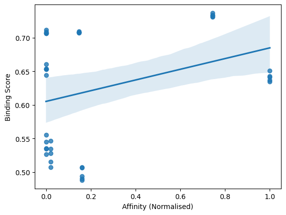
[50]:
result = pg.corr(binding_scores['affinity_norm'], binding_scores['prediction'], alternative='greater')
print(f"R^2 = {result.iloc[0]['r'] ** 2:.2f}")
result
R^2 = 0.11
[50]:
| n | r | CI95% | p-val | BF10 | power | |
|---|---|---|---|---|---|---|
| pearson | 40 | 0.334479 | [0.08, 1.0] | 0.017449 | 3.307 | 0.690935 |
Structure overlap
Structural Features
[51]:
predicted_structural_features = pd.read_csv(
'../data/processed/predicted_af3_af3_tcrmodel2_structural_features_coeliac_mutations.csv'
)
predicted_structural_features = predicted_structural_features.merge(
sequences_beta_only_mutations, how='right', left_on='name', right_index=True
)
predicted_sc_and_bsa = pd.read_csv('../data/processed/predicted_af3_af3_tcrmodel2_sc_and_bsa_coeliac_mutations.csv')
predicted_structural_features = predicted_structural_features.merge(
predicted_sc_and_bsa, on=['name', 'seed', 'sample'], how='left'
)
[52]:
value_columns = [
col for col in predicted_structural_features.select_dtypes('number').columns if col not in ('seed', 'sample')
]
[53]:
fig, axes = plt.subplots(1, len(value_columns), figsize=(5 * len(value_columns), 5))
for column_name, ax in zip(value_columns, axes, strict=True):
sns.boxplot(
predicted_structural_features[predicted_structural_features['original']], y=column_name, x='pmhc_calls', ax=ax
)
old_label = ax.get_ylabel()
ax.set_ylabel(old_label.replace('_', ' ').title() if len(old_label.split('_')) > 1 else old_label.upper())
ax.set_xlabel('Antigen')
for i, antigen in enumerate(label.get_text() for label in ax.get_xticklabels()):
true_value = true_structural_features.loc[true_structural_features['antigen'] == antigen, column_name].iloc[0]
ax.plot(i, true_value, 'rx')
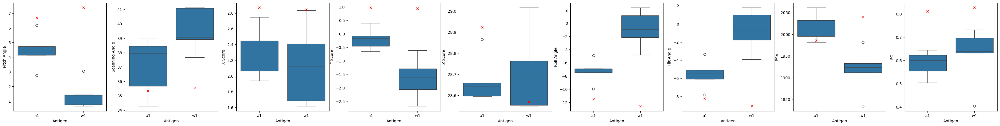
[54]:
antigens = true_structural_features['antigen'].unique()
print('True value in predicted 95% CI?\n')
print(f" {' '.join(antigens)}")
for column_name in value_columns:
print(f'{column_name:<20}', end='')
for antigen in antigens:
predicted_values = predicted_structural_features.loc[
predicted_structural_features['original'] & (predicted_structural_features['pmhc_calls'] == antigen),
column_name,
]
true_value = true_structural_features.loc[true_structural_features['antigen'] == antigen, column_name].iloc[0]
predicted_values_mean = predicted_values.mean()
predicted_values_sem = predicted_values.sem()
print(
(
(predicted_values_mean - 1.96 * predicted_values_sem)
<= true_value
<= (predicted_values_mean + 1.96 * predicted_values_sem)
),
end=' ',
)
print()
True value in predicted 95% CI?
a1 w1
pitch_angle False False
scanning_angle True False
x_score False False
y_score False False
z_score False True
roll_angle False False
tilt_angle False False
bsa False False
sc False False
[55]:
predicted_structural_features.query('not original')['name'].unique()
[55]:
array(['coeliac_a1_mut_10', 'coeliac_a1_mut_11', 'coeliac_a1_mut_12',
'coeliac_a1_mut_13', 'coeliac_a1_mut_14', 'coeliac_a1_mut_15',
'coeliac_a1_mut_16', 'coeliac_a1_mut_17', 'coeliac_w1_mut_10',
'coeliac_w1_mut_11', 'coeliac_w1_mut_12', 'coeliac_w1_mut_13',
'coeliac_w1_mut_14', 'coeliac_w1_mut_15', 'coeliac_w1_mut_16',
'coeliac_w1_mut_17'], dtype=object)
[56]:
fig, axes = plt.subplots(1, len(value_columns), figsize=(5 * len(value_columns), 5))
for column_name, ax in zip(value_columns, axes, strict=True):
sns.boxplot(
predicted_structural_features[~predicted_structural_features['original']],
y=column_name,
hue='wd_motif',
x='pmhc_calls',
ax=ax,
)
old_label = ax.get_ylabel()
ax.set_ylabel(old_label.replace('_', ' ').title() if len(old_label.split('_')) > 1 else old_label.upper())
ax.set_xlabel('Antigen')
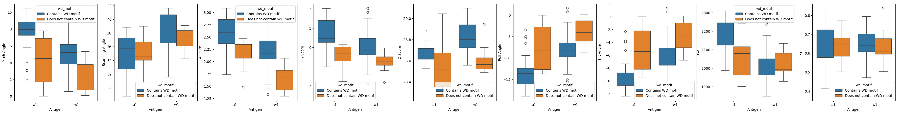
[57]:
predicted_structural_features_compared_to_experiment = predicted_structural_features.query('not original').merge(
true_structural_features.set_index('antigen'),
how='inner',
left_on='pmhc_calls',
right_index=True,
suffixes=('_predicted', '_wildtype'),
)
for column in value_columns:
predicted_structural_features_compared_to_experiment[column] = (
predicted_structural_features_compared_to_experiment[f'{column}_predicted']
- predicted_structural_features_compared_to_experiment[f'{column}_wildtype']
)
fig, axes = plt.subplots(1, len(value_columns), figsize=(5 * len(value_columns), 5))
for column_name, ax in zip(value_columns, axes, strict=True):
sns.boxplot(
predicted_structural_features_compared_to_experiment,
y=column_name,
hue='wd_motif',
x='pmhc_calls',
ax=ax,
)
old_label = ax.get_ylabel()
ax.axhline(0, color='red', linestyle='dashed')
ax.set_ylabel(old_label.replace('_', ' ').title() if len(old_label.split('_')) > 1 else old_label.upper())
ax.set_xlabel('Antigen')
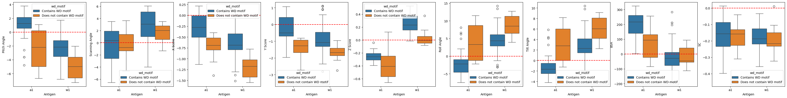
[58]:
predicted_wildtype_average = predicted_structural_features.query('original').groupby('name')[value_columns].agg('mean')
predicted_wildtype_average.index = predicted_wildtype_average.index.map(lambda name: re.search('(a|w)1', name).group(0))
predicted_wildtype_average.index.name = 'antigen'
predicted_structural_features_compared_to_wildtype = predicted_structural_features.query('not original').merge(
predicted_wildtype_average,
how='inner',
left_on='pmhc_calls',
right_index=True,
suffixes=('_predicted', '_wildtype'),
)
for column in value_columns:
predicted_structural_features_compared_to_wildtype[column] = (
predicted_structural_features_compared_to_wildtype[f'{column}_predicted']
- predicted_structural_features_compared_to_wildtype[f'{column}_wildtype']
)
fig, axes = plt.subplots(1, len(value_columns), figsize=(5 * len(value_columns), 5))
for column_name, ax in zip(value_columns, axes, strict=True):
sns.boxplot(
predicted_structural_features_compared_to_wildtype,
y=column_name,
hue='wd_motif',
x='pmhc_calls',
ax=ax,
)
old_label = ax.get_ylabel()
ax.axhline(0, color='red', linestyle='dashed')
ax.set_ylabel(old_label.replace('_', ' ').title() if len(old_label.split('_')) > 1 else old_label.upper())
ax.set_xlabel('Antigen')
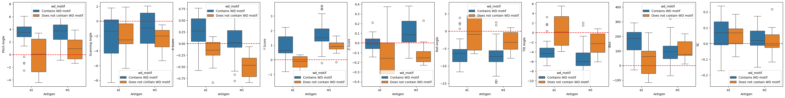
Contact Maps
[59]:
predicted_contact_maps = pd.read_csv('../data/processed/predicted_af3_af3_tcrmodel2_contact_maps_coeliac_mutations.csv')
predicted_contact_maps['relative_pos_centre_tcr'] = predicted_contact_maps['relative_pos_centre_tcr'].astype(int)
predicted_contact_maps['resi_pmhc'] = predicted_contact_maps['resi_pmhc'].astype(str).str.replace('.0', '')
predicted_contact_maps_scores = process_contacts(predicted_contact_maps, ['name', 'seed', 'sample'])
predicted_contact_maps_scores = predicted_contact_maps_scores.merge(
sequences_beta_only_mutations, how='right', left_on='name', right_index=True
)
[60]:
true_contact_names = set(true_contact_maps_scores.select_dtypes('number').columns)
predicted_contact_names = {
column_name
for column_name in predicted_contact_maps_scores.select_dtypes('number').columns
if column_name not in ('seed', 'sample')
}
for column_name in predicted_contact_names - true_contact_names:
true_contact_maps_scores[column_name] = 0
for column_name in true_contact_names - predicted_contact_names:
predicted_contact_maps_scores[column_name] = 0
[61]:
contact_names = sorted(true_contact_names | predicted_contact_names)
[62]:
antigens = sorted(true_contact_maps_scores['antigen'].unique())
similarities = {}
for antigen in antigens:
predicted_contact_maps_scores_values = predicted_contact_maps_scores.loc[
predicted_contact_maps_scores['original'] & (predicted_contact_maps_scores['pmhc_calls'] == antigen),
contact_names,
].to_numpy()
true_contact_maps_scores_values = true_contact_maps_scores.loc[
true_contact_maps_scores['antigen'] == antigen, contact_names
].to_numpy()
between = cosine_similarity(predicted_contact_maps_scores_values, true_contact_maps_scores_values)
between = between.flatten()
within = cosine_similarity(predicted_contact_maps_scores_values, predicted_contact_maps_scores_values)
within = np.array([within[i, j] for i in range(len(within)) for j in range(i + 1, len(within))])
similarities[antigen] = {
'between': between.tolist(),
'within': within.tolist(),
}
similarities = pd.DataFrame(similarities)
similarities.index.name = 'comparison'
similarities = (
similarities.explode(antigens)
.reset_index()
.melt(id_vars='comparison', value_vars=antigens, var_name='antigen', value_name='cosine_similarity')
)
similarities['cosine_similarity'] = similarities['cosine_similarity'].astype(float)
[63]:
ax = sns.boxplot(similarities, x='antigen', y='cosine_similarity', hue='comparison')
ax.set_ylim(0, 1)
plt.show()
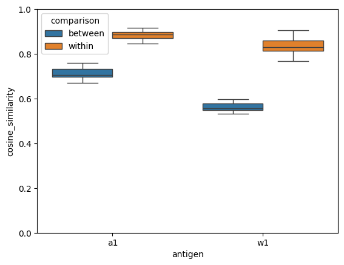
[64]:
grid = sns.FacetGrid(similarities, row='antigen', col='comparison', sharex=False)
grid.map_dataframe(sns.histplot, x='cosine_similarity')
plt.show()
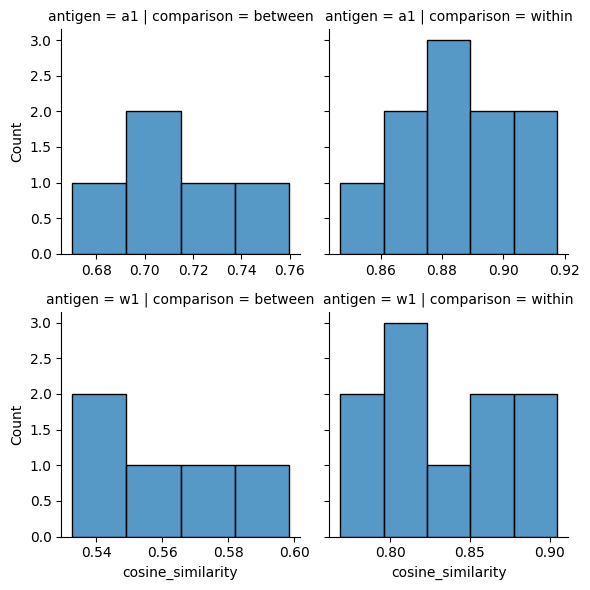
[65]:
result = pg.anova(similarities, dv='cosine_similarity', between=['antigen', 'comparison'])
result['significant'] = result['p-unc'] < SIGNIFICANCE_LEVEL
result
[65]:
| Source | SS | DF | MS | F | p-unc | np2 | significant | |
|---|---|---|---|---|---|---|---|---|
| 0 | antigen | 0.053317 | 1.0 | 0.053317 | 45.923569 | 3.424675e-07 | 0.638505 | True |
| 1 | comparison | 0.329973 | 1.0 | 0.329973 | 284.215939 | 1.625167e-15 | 0.916187 | True |
| 2 | antigen * comparison | 0.016180 | 1.0 | 0.016180 | 13.936159 | 9.340248e-04 | 0.348961 | True |
| 3 | Residual | 0.030186 | 26.0 | 0.001161 | NaN | NaN | NaN | False |
[66]:
results = []
for antigen, epitope_group in similarities.groupby('antigen'):
result = pg.ttest(
epitope_group.query("comparison == 'within'")['cosine_similarity'],
epitope_group.query("comparison == 'between'")['cosine_similarity'],
)
result['antigen'] = antigen
results.append(result)
results = pd.concat(results)
results = results.set_index('antigen')
results['significant'] = results['p-val'] < (SIGNIFICANCE_LEVEL / len(results))
results
[66]:
| T | dof | alternative | p-val | CI95% | cohen-d | BF10 | power | significant | |
|---|---|---|---|---|---|---|---|---|---|
| antigen | |||||||||
| a1 | 10.272507 | 5.776496 | two-sided | 6.310135e-05 | [0.13, 0.21] | 6.513638 | 5.628e+04 | 1.0 | True |
| w1 | 14.790922 | 12.528573 | two-sided | 2.644994e-09 | [0.23, 0.31] | 6.762245 | 2.943e+06 | 1.0 | True |
Interactions
[67]:
predicted_interactions = pd.read_csv('../data/processed/predicted_af3_af3_tcrmodel2_interactions_coeliac_mutations.csv')
predicted_interactions = predicted_interactions.merge(
sequences_beta_only_mutations, how='right', left_on='name', right_index=True
)
[68]:
def calculate_interaction_accuracy(group: pd.DataFrame, true_interactions: pd.DataFrame) -> tuple[float, float]:
group = group.merge(
true_interactions[
['type', 'domain', 'original_numbering', 'protein_residue', 'ligand_number', 'ligand_residue']
],
how='outer',
indicator=True,
)
classification = group['_merge'].map({'both': 'TP', 'left_only': 'FP', 'right_only': 'FN'})
classification_counts = classification.value_counts()
return (
(classification_counts['TP'] / classification_counts.sum()) * 100,
(classification_counts['FP'] / classification_counts.sum()) * 100,
)
α1 epitope
[69]:
true_a1_interactions_summary
[69]:
| type | domain | original_numbering | protein_residue | ligand_number | ligand_residue | distance | |
|---|---|---|---|---|---|---|---|
| 0 | hydrophobic | VB | 37 | ARG | 9 | PRO | 3.612334 |
| 1 | hydrophobic | VB | 108 | LEU | 9 | PRO | 3.775657 |
| 2 | hydrophobic | VB | 109 | VAL | 9 | PRO | 3.919943 |
| 3 | hydrophobic | VB | 112 | TRP | 6 | PRO | 3.813673 |
[70]:
original_a1_interactions = predicted_interactions.query("original and pmhc_calls == 'a1'")
num_predictions = len(original_a1_interactions.drop_duplicates(['name', 'seed', 'sample']))
original_a1_interactions_summary = original_a1_interactions.value_counts(
['type', 'domain', 'original_numbering', 'protein_residue', 'ligand_number', 'ligand_residue']
)
original_a1_interactions_summary = (original_a1_interactions_summary / num_predictions) * 100
original_a1_interactions_summary.name = 'captured_percent'
original_a1_interactions_summary = original_a1_interactions_summary.reset_index()
original_a1_interactions_summary = original_a1_interactions_summary.sort_values('original_numbering')
original_a1_interactions_summary = original_a1_interactions_summary.merge(
true_a1_interactions_summary[
['type', 'domain', 'original_numbering', 'protein_residue', 'ligand_number', 'ligand_residue']
],
how='outer',
indicator=True,
)
original_a1_interactions_summary['captured_percent'] = original_a1_interactions_summary['captured_percent'].fillna(0.0)
merge_mask = original_a1_interactions_summary['_merge'].isin(('both', 'right_only'))
original_a1_interactions_summary = original_a1_interactions_summary.drop('_merge', axis='columns')
original_a1_interactions_summary.style.apply(
lambda row, merge_mask=merge_mask: ['font-weight: bold'] * len(row) if merge_mask[row.name] else [''] * len(row),
axis=1,
)
[70]:
| type | domain | original_numbering | protein_residue | ligand_number | ligand_residue | captured_percent | |
|---|---|---|---|---|---|---|---|
| 0 | hydrophobic | VB | 37 | ARG | 9 | PRO | 0.000000 |
| 1 | hydrophobic | VB | 108 | LEU | 9 | PRO | 40.000000 |
| 2 | hydrophobic | VB | 109 | VAL | 9 | PRO | 100.000000 |
| 3 | hydrophobic | VB | 112 | TRP | 6 | PRO | 80.000000 |
[71]:
a1_interactions_accuracy = (
predicted_interactions.query("pmhc_calls == 'a1'")
.groupby(['name', 'seed', 'sample', 'original', 'wd_motif'])
.apply(calculate_interaction_accuracy, true_interactions=true_a1_interactions_summary, include_groups=False)
.apply(pd.Series)
)
a1_interactions_accuracy.columns = ['accuracy', 'noise']
a1_interactions_accuracy = a1_interactions_accuracy.reset_index()
[72]:
a1_interactions_accuracy['status'] = None
a1_interactions_accuracy.loc[a1_interactions_accuracy['original'], 'status'] = 'Original'
a1_interactions_accuracy.loc[
~a1_interactions_accuracy['original'] & (a1_interactions_accuracy['wd_motif'] == 'Contains WD motif'), 'status'
] = 'Mutant (Contains WD motif)'
a1_interactions_accuracy.loc[
~a1_interactions_accuracy['original'] & (a1_interactions_accuracy['wd_motif'] == 'Does not contain WD motif'),
'status',
] = 'Mutant (Does not contain WD motif)'
[73]:
fig, axes = plt.subplots(1, 2, figsize=(10, 5))
fig.suptitle(r'$\alpha$1 epitope interaction recovery')
sns.boxplot(
a1_interactions_accuracy,
x='status',
y='accuracy',
order=['Original', 'Mutant (Contains WD motif)', 'Mutant (Does not contain WD motif)'],
ax=axes[0],
)
axes[0].set_title('Accuracy')
axes[0].set_ylabel('')
axes[0].set_ylim([-5, 100])
axes[0].yaxis.set_major_formatter(PercentFormatter())
axes[0].set_xlabel('')
axes[0].set_xticks(axes[0].get_xticks())
axes[0].set_xticklabels(axes[0].get_xticklabels(), rotation=-45, ha='left')
sns.boxplot(
a1_interactions_accuracy,
x='status',
y='noise',
order=['Original', 'Mutant (Contains WD motif)', 'Mutant (Does not contain WD motif)'],
ax=axes[1],
)
axes[1].set_title('Noise')
axes[1].set_ylabel('')
axes[1].set_ylim([-5, 100])
axes[1].yaxis.set_major_formatter(PercentFormatter())
axes[1].set_xlabel('')
axes[1].set_xticks(axes[0].get_xticks())
axes[1].set_xticklabels(axes[0].get_xticklabels(), rotation=-45, ha='left')
plt.show()
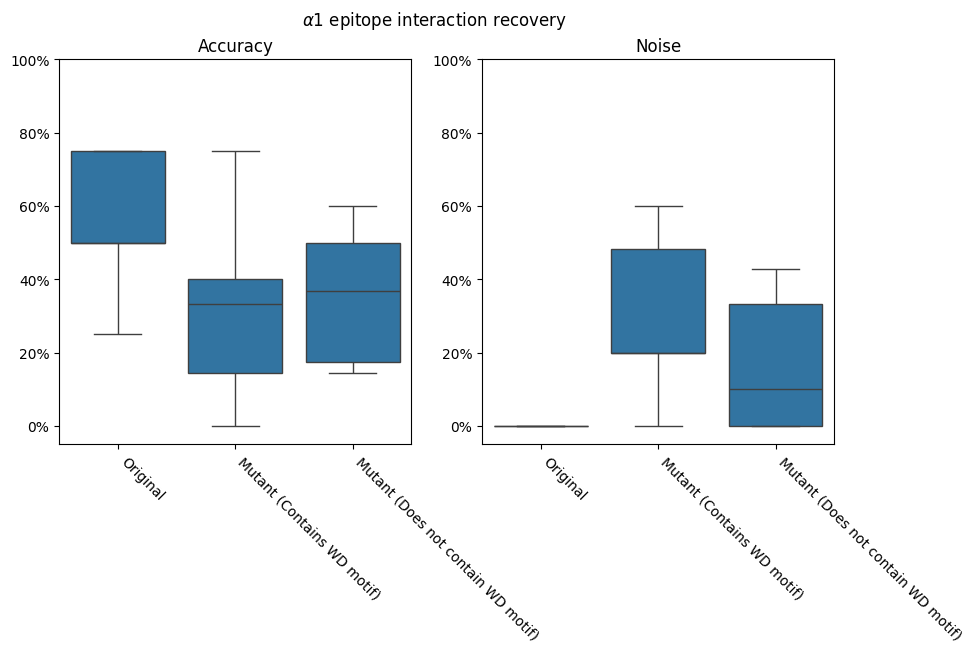
ω1 epitope
[74]:
true_w1_interactions_summary
[74]:
| type | domain | original_numbering | protein_residue | ligand_number | ligand_residue | distance | |
|---|---|---|---|---|---|---|---|
| 0 | hydrophobic | VB | 108 | LEU | 9 | PRO | 3.565586 |
| 1 | hydrophobic | VB | 112 | TRP | 4 | PRO | 3.546830 |
| 2 | hydrophobic | VB | 112 | TRP | 6 | PRO | 3.620198 |
| 3 | hydrophobic | VB | 113 | ASP | 3 | PHE | 3.955730 |
[75]:
original_w1_interactions = predicted_interactions.query("original and pmhc_calls == 'w1'")
num_predictions = len(original_w1_interactions.drop_duplicates(['name', 'seed', 'sample']))
original_w1_interactions_summary = original_w1_interactions.value_counts(
['type', 'domain', 'original_numbering', 'protein_residue', 'ligand_number', 'ligand_residue']
)
original_w1_interactions_summary = (original_w1_interactions_summary / num_predictions) * 100
original_w1_interactions_summary.name = 'captured_percent'
original_w1_interactions_summary = original_w1_interactions_summary.reset_index()
original_w1_interactions_summary = original_w1_interactions_summary.sort_values('original_numbering')
original_w1_interactions_summary = original_w1_interactions_summary.merge(
true_w1_interactions_summary[
['type', 'domain', 'original_numbering', 'protein_residue', 'ligand_number', 'ligand_residue']
],
how='outer',
indicator=True,
)
original_w1_interactions_summary['captured_percent'] = original_w1_interactions_summary['captured_percent'].fillna(0.0)
merge_mask = original_w1_interactions_summary['_merge'].isin(('both', 'right_only'))
original_w1_interactions_summary = original_w1_interactions_summary.drop('_merge', axis='columns')
original_w1_interactions_summary.style.apply(
lambda row, merge_mask=merge_mask: ['font-weight: bold'] * len(row) if merge_mask[row.name] else [''] * len(row),
axis=1,
)
[75]:
| type | domain | original_numbering | protein_residue | ligand_number | ligand_residue | captured_percent | |
|---|---|---|---|---|---|---|---|
| 0 | hbond | VB | 37 | ARG | 10 | PHE | 20.000000 |
| 1 | hydrophobic | VB | 108 | LEU | 9 | PRO | 0.000000 |
| 2 | hydrophobic | VB | 109 | VAL | 9 | PRO | 80.000000 |
| 3 | hydrophobic | VB | 112 | TRP | 4 | PRO | 0.000000 |
| 4 | hydrophobic | VB | 112 | TRP | 6 | PRO | 160.000000 |
| 5 | hydrophobic | VB | 113 | ASP | 3 | PHE | 0.000000 |
[76]:
w1_interactions_accuracy = (
predicted_interactions.query("pmhc_calls == 'w1'")
.groupby(['name', 'seed', 'sample', 'original', 'wd_motif'])
.apply(calculate_interaction_accuracy, true_interactions=true_a1_interactions_summary, include_groups=False)
.apply(pd.Series)
)
w1_interactions_accuracy.columns = ['accuracy', 'noise']
w1_interactions_accuracy = a1_interactions_accuracy.reset_index()
[77]:
w1_interactions_accuracy['status'] = None
w1_interactions_accuracy.loc[w1_interactions_accuracy['original'], 'status'] = 'Original'
w1_interactions_accuracy.loc[
~w1_interactions_accuracy['original'] & (w1_interactions_accuracy['wd_motif'] == 'Contains WD motif'), 'status'
] = 'Mutant (Contains WD motif)'
w1_interactions_accuracy.loc[
~w1_interactions_accuracy['original'] & (w1_interactions_accuracy['wd_motif'] == 'Does not contain WD motif'),
'status',
] = 'Mutant (Does not contain WD motif)'
[78]:
fig, axes = plt.subplots(1, 2, figsize=(10, 5))
fig.suptitle(r'$\omega$1 epitope interaction recovery')
sns.boxplot(
w1_interactions_accuracy,
x='status',
y='accuracy',
order=['Original', 'Mutant (Contains WD motif)', 'Mutant (Does not contain WD motif)'],
ax=axes[0],
)
axes[0].set_title('Accuracy')
axes[0].set_ylabel('')
axes[0].set_ylim([-5, 100])
axes[0].yaxis.set_major_formatter(PercentFormatter())
axes[0].set_xlabel('')
axes[0].set_xticks(axes[0].get_xticks())
axes[0].set_xticklabels(axes[0].get_xticklabels(), rotation=-45, ha='left')
sns.boxplot(
w1_interactions_accuracy,
x='status',
y='noise',
order=['Original', 'Mutant (Contains WD motif)', 'Mutant (Does not contain WD motif)'],
ax=axes[1],
)
axes[1].set_title('Noise')
axes[1].set_ylabel('')
axes[1].set_ylim([-5, 100])
axes[1].yaxis.set_major_formatter(PercentFormatter())
axes[1].set_xlabel('')
axes[1].set_xticks(axes[0].get_xticks())
axes[1].set_xticklabels(axes[0].get_xticklabels(), rotation=-45, ha='left')
plt.show()